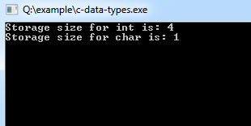

C Header File
Header files are helping file of your C program which holds the definitions of various functions and their associated variables that needs to be imported into your C program with the help of pre-processor #include statement. All the header file have a '.h' an extension that contains C function declaration and macro definitions. In other words, the header files can be requested using the preprocessor directive #include. The default header file that comes with the C compiler is the stdio.h.
Including a header file means that using the content of header file in your source program. A straightforward practice while programming in C or C++ programs is that you can keep every macro, global variables, constants, and other function prototypes in the header files. The basic syntax of using these header files is:
#include< filename >
or
#include "file"
e.g
#include< stdio.h >
int x;
#include "karl.h"
int main ()
{
printf("Program done");
return 0;
}
This kind of file inclusion is implemented for including system oriented header files. This technique (with angular braces) searches for your file-name in the standard list of system directories or within the compiler's directory of header files. Whereas, the second kind of header file is used for user-defined header files or other external files for your program. This technique is used to search for the file(s) within the directory that contains the current file.
C Data Types
The data-type in a programming language is the collection of data with values having fixed meaning as well as characteristics. Some of them are an integer, floating point, character, etc. Usually, programming languages specify the range values for given data-type.
C Data Types are used to
- Identify the type of a variable when it declared.
- Identify the type of the return value of a function.
- Identify the type of a parameter expected by a function.
Primary Data Types
Every C compiler supports five primary data types:
| void | As the name suggests, it holds no value and is generally used for specifying the type of function or what it returns. If the function has a void type, it means that the function will not return any value. |
| int | Used to denote an integer type. |
| char | Used to denote a character type. |
| float, double | Used to denote a floating point type. |
| int *, float *, char * | Used to denote a pointer type. |
Three more data types have been added in C99:
- _Bool
- _Complex
- _Imaginary
Decalration of Primary Data Types With VAriable Name
Example:
int age;
char letters;
foat hight,width;
Derived Data Types
C supports three derived data types:
| Data Types | Description |
|---|---|
| Arrays | Arrays are sequences of data items having homogeneous values. They have adjacent memory locations to store values. |
| References | Function pointers allow referencing functions with a particular signature. |
| Pointers | These are powerful C features which are used to access the memory and deal with their addresses. |
User Defined Data Types
C allows the feature called type definition which allows programmers to define their identifier that would represent an existing data type. There are three such types:
| Data Types | Description |
|---|---|
| Structure | It is a package of variables of different types under a single name. This is done to handle data efficiently. "struct" keyword is used to define a structure. |
| Union | These allow storing various data types in the same memory location. Programmers can define a union with different members, but only a single member can contain a value at a given time. It is used for |
| Enum | Enumeration is a special data type that consists of integral constants, and each of them is assigned with a specific name. "enum" keyword is used to define the enumerated data type. |
Data Types and Variable Declaration in C
Example:
#include < stdio.h >
int main()
{
int a = 4000; // positive integer data type
float b = 5.2324; // float data type
char c = 'Z'; // char data type
long d = 41657; // long positive integer data type
long e = -21556; // long -ve integer data type
int f = -185; // -ve integer data type
short g = 130; // short +ve integer data type
short h = -130; // short -ve integer data type
double i = 4.1234567890; // double float data type
float j = -3.55; // float data type
}
Example:
#include < stdio.h >
#include < limits.h >
int main()
{
printf("Storage size for int is: %d \n", sizeof(int));
printf("Storage size for char is: %d \n", sizeof(char));
return 0;
}
Program Output
C Variables
Variables are memory locations(storage area) in the C programming language. The primary purpose of variables is to store data in memory for later use. Unlike constants which do not change during the program execution, variables value may change during execution. If you declare a variable in C, that means you are asking the operating system to reserve a piece of memory with that variable name.
Variable Declaration in C
Syntax:
type variable_name;
or
type variable_name, variable_name, variable_name;
Variable Declaration and Initialization
Example:
int width, height=5;
char letter='A';
float age, area;
double d;
/* actual initialization */width = 10;
age = 26.5;
Variable Assignment
A variable assignment is a process of assigning a value to a variable.
Example:
int width = 60;
int age = 31;
There are some rules on choosing variable names
- A variable name can consist of Capital letters A-Z, lowercase letters a-z, digits 0-9, and the underscore character.
- The first character must be a letter or underscore.
- Blank spaces cannot be used in variable names.
- Special characters like #, $ are not allowed.
- C keywords cannot be used as variable names.
- Variable names are case sensitive.
- Values of the variables can be numeric or alphabetic.
- Variable type can be char, int, float, double, or void.
C Program to Print Value of Variable
Example:
#include< stdio.h >
void main()
{
/* c program to print value of a variable */ int age = 33;
printf("I am %d years old.\n", age);
}
Program Output:
I am 33 years old.
C Input and Output (I/O)
As we all know the three essential functions of a computer are reading, processing and writing data. Majority of the programs take data as input, and then after processing the processed data is being displayed which is called information. In C programming you can use scanf() and printf() predefined function to read and print data.
Example:
#include< stdio.h >
void main()
{
int a,b,c;
printf("Please enter any two numbers: \n");
scanf("%d %d", &a, &b);
c = a + b;
printf("The addition of two number is: %d", c);
}
Output
Please enter any two numbers:
12
3
The addition of two number is:15
The above program scanf() is used to take input from the user, and respectively printf() is used to display output result on the screen.
Managing Input/Output
I/O operations are useful for a program to interact with users. stdlib is the standard C library for input-output operations. While dealing with input-output operations in C, two important streams play their role. These are:
- Standard Input (stdin)
- Standard Output (stdout)
Standard input or stdin is used for taking input from devices such as the keyboard as a data stream. Standard output or stdout is used for giving output to a device such as a monitor. For using I/O functionality, programmers must include stdio header-file within the program.
Reading Character in C
The easiest and simplest of all I/O operations are taking a character as input by reading that character from standard input (keyboard). getchar() function can be used to read a single character. This function is alternate to scanf() function.
Sytax:
var_name = getchar();
Example:
#include< stdio.h >
void main()
{
char title;
title = getchar();
}
There is another function to do that task for files: getc which is used to accept a character from standard input.
Sytax:
int getc(FILE *stream);
Writing Character in C
Similar to getchar() there is another function which is used to write characters, but one at a time.
Syntax:
putchar(var_name);
Example:
#include< stdio.h >
void main()
{
char result = 'P';
putchar(result);
putchar('\n');
}
Similarly, there is another function putc which is used for sending a single character to the standard output.
Sytax:
int putc(int c, FILE *stream);
C Program Structure
This lesson has detailed description of C program structure. It's essential for you before proceeding to learn more advanced lessons of C programming.
Sample Code of C "Hello World" Program
Example:
/* Author: www.w3schools.in
Date: 2018-04-28
Description:
Writes the words "Hello, World!" on the screen */
#include
int main()
{
printf("Hello, World!\n");
return 0;
}
Or in different way
/* Author: www.w3schools.in
Date: 2013-11-15
Description:
Writes the words "Hello, World!" on the screen */
#include
#include
void main()
{
printf("Hello, World!\n");
return;
} Basic Structure of C Program
The example discussed above illustrates how a simple C program looks like and how the program segment works. A C program may contain one or more sections which are figured above. The Documentation section usually contains the collection of comment lines giving the name of the program, author's or programmer's name and few other details. The second part is the link-section which instructs the compiler to connect to the various functions from the system library. The Definition section describes all the symbolic-constants. The global declaration section is used to define those variables that are used globally within the entire program and is used in more than one function. This section also declares all the user-defined functions. Then comes the main(). All C programs must have a main() which contains two parts:
- Declaration part
- Execution part
The declaration part is used to declare all variables that will be used within the program. There needs to be at least one statement in the executable part, and these two parts are declared within the opening and closing curly braces of the main(). The execution of the program begins at the opening brace '{' and ends with the closing brace '}'. Also, it has to be noted that all the statements of these two parts need to be terminated with a semi-colon. The sub-program section deals with all user-defined functions that are called from the main(). These user-defined functions are declared and usually defined after the main() function.